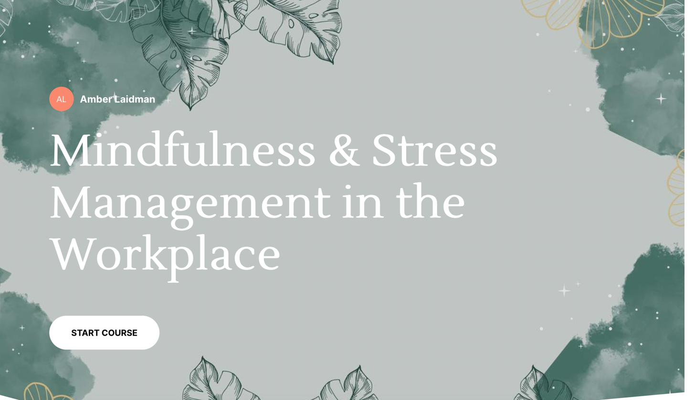

A workplace mindfulness course built on formal ID frameworks, peer-reviewed by working L&D professionals, and audited against accessibility standards before launch.

Workplace wellness training has a credibility problem. Most of it reads as performative — a slide deck on "self-care" that doesn't connect to the actual stressors employees face or give them anything they can apply on Monday morning.
I wanted to build something different: a course that treats workplace stress as a real performance problem, equips learners with named techniques they can practice, and respects the learner's intelligence by being grounded in research rather than vibes.
The audience: anyone in the workforce, entry-level to C-suite, who's navigating workplace stress and wants tools that actually work.
Building a credible wellness course meant solving for three things at once. The content had to be evidence-based, not aspirational. The design had to support adult learners with varied technology comfort. And the structure had to make every learning moment traceable to a specific objective, not just "feel" instructional.
The early version of the problem statement got flagged by a senior ID reviewer as reading more like an HR escalation than a learning gap — a real critique that forced a rewrite of the entire framing. The challenge wasn't whether to lean on ID frameworks; it was whether to use them visibly enough that the rigor showed through.
Every lesson was built backward from the outcome using Backwards Design, sequenced through Gagne's Nine Events of Instruction, and leveled through Bloom's Taxonomy — LOTS for recall and definition, HOTS for application and self-reflection — with every knowledge check tied to a specific objective, not just tacked on for completion metrics.
Media choices ran through Mayer's principles of multimedia learning (coherence, signaling, contiguity, redundancy) and the Made to Stick SUCCESs framework (concrete, emotional, story-driven), with rationale documented per asset so I could defend every choice — not just my taste for it. The course was built in Articulate Rise 360 with Reach 360 as the LMS; Google Forms handled the Workplace Stress Scale baseline assessment, the breathing exercise demonstration upload, and the post-course reflection survey.
A full accessibility audit followed Harvard's manual testing protocol — alt text, contrast ratios, keyboard navigation, screen reader compatibility, and 200% zoom — with issues identified and resolved before pilot. The course was reviewed by three senior IDs and three additional learners across multiple feedback rounds; revisions tracked publicly in the design doc.
I designed the course against the Kirkpatrick Model of Training Evaluation from the start, with intentional measurement built into the pilot rather than bolted on afterward.
7 of 7 respondents rated delivery 5 out of 5. 6 of 7 rated content effectiveness 5 out of 5. Captured via post-course survey.
Knowledge checks were embedded in every lesson at 80% passing thresholds. In the pilot context, individual pass rates weren't centrally tracked — a real-world deployment would need LMS-level analytics to close this loop.
85.7% of respondents reported implementing breathing exercises and mindfulness meditation into their daily routines within weeks of course completion. The techniques learners actually adopted matched the lessons most heavily reinforced through practice.
Out of scope for an academic pilot. In a workplace deployment, tracking absenteeism, engagement scores, or self-reported stress levels 90 days post-course would be the natural next step.
Building this taught me that ID frameworks aren't decoration — they're load-bearing. The reason the SME revision cycle worked is that every choice was traceable to a named principle, so feedback became a conversation about whether the principle was applied correctly, not whether my taste was right.
If I rebuilt today, the biggest investment would be social learning — discussion boards, peer polling, scenario-based forum discussions — and gamification through an LMS that supports it (Moodle, Docebo). The course currently treats learners as solo travelers; the next version would treat the cohort as part of the design.
The course was piloted with 7 reviewers, including peer instructional designers and learning leaders.